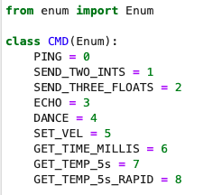

Lab 2
Objective:
In Lab 2, I set up and experimented with Bluetooth Low Energy communication between my computer and the Artemis Nano. Using the publish-and-subscribe model, I requested and viewed clock and temperature sensor information from the Artemis in a Jupyter Notebook.
Prelab:
In the prelab I created a virtual environment and installed the packages necessary for the lab. This included Numpy, Pyyaml, Colorado, Nest_Asyncio, Bleak, and JupyterLab. Reading through both the Arduino and Python codebases, as well as the documentation for BLE, I became familiar with the functions and classes to be used in the lab.
Codebase:
In the Arduino codebase, there is a class to send and receive data using BLE methods, a class to manipulate character arrays, and a class to parse commands. In the Python codebase, the setting of MAC address and service UUID allows a connection to be established. There are also files to enumerate commands, log data, and write the tasks of the lab. The ArtemisBLEController class gives us the member functions to send and receive data from the Artemis over BLE. Together with the lab script run on the Nano, these enable the publisher-and-subscriber BLE model to function. Using this model, when the peripheral device, the Artemis, updates a characteristic within a service, the notify mechanism on the central device, the computer with Jupiter Notebook, will stream the string without an explicit read command. Additionally, commands enable the Jupiter notebook to elicit responses from the Artemis, to be retrieved from updated characteristic values.
Configuration:
Having read through the Arduino and Python codebases, and documentation for BLE, I proceeded to print the MAC address for my Artemis board.
Updating the MAC address, and replacing the default UUID with a new generated one, in connections.yaml enabled the Juypter Notebook to link to the Artemis board over Bluetooth.
Demo:
Running each of the cells of the demo, I was able to verify the behavior of my bluetooth connection.
Verification of Connection (Notebook side):
Verification of Connection (Artemis side):
Verification of data received from Artemis:
Verification of command sent to Artemis (Notebook side):

Verification of command sent to Artemis (Artemis side):
Verification of disconnect from Artemis (Notebook side):
Verification of disconnect from Artemis (Artemis side):
Tasks:
Task 1:
The first task was to use the provided ECHO command to send a string to the Artemis, and receive back a modification of the string. In order to do so, the ECHO command case on the Artemis was modified to prepend and echo the received string with ‘Artemis said: [sent message]‘.
Task 2:
The second task was to create a new command GET_TIME_MILLIS, that causes the Artemis to retrieve the current time in milliseconds from the start of the program on the Artemis, and updates the string characteristic with it. The Notebook would receive the updated string from this characteristic. Including the GET_TIME_MILLIS command in the enumeration for both the Notebook and the Artemis enabled it to be generated and recognized respectively.

Task 3:
The third task was to create a callback function for an event listener using ArtemisBLEController member functions in the Notebook. Using the start_notify function we begin listening for updates to the string characteristic, and in the callback function we convert the byte array to a string and print it. As we are only waiting to receive a single value, we then stop monitoring updates to the string characteristic.
Task 4:
The fourth task was to create a command GET_TEMP_5s (in the same manner as task 2) that elicits 5 timestamped temperature readings, each separated by a one second delay, from the Artemis. Rather than waiting to collect multiple readings and then updating the characteristic as a single string consisting of multiple readings, I chose to update the characteristic as soon as a new reading was taken, allowing the Notebook to immediately be notified and receive the new value. The value is split into timestamp and temperature segments and embedded in a printed string. Keeping track of how many values have been received, the notification handler is disabled once all 5 have been.
Task 5:
The fifth task is functionally identical to the fourth, but we remove the rate limiting delay of the timestamped temperature readings, and do not place an expected cap on the number of received readings. Instead, in the GET_TEMP_5s_RAPID command we use a conditional that checks if 5 seconds has passed between the enabling of the notification handler, and the newest reading, before disabling notifications for string updates. Using the same format for new readings as task four, we consistently receive ~90 readings in 5 seconds. If we were to fill each string update up to the characteristic limit, the number of received samplings would be far higher, but slightly more convoluted to process in the Notebook.

Task 6:
At 150Hz, we are generating a new reading approximately every 6.67mS. With each reading of 16 bits, for 5 seconds, this imputes 12000 total bits to be stored for the grouping. If no compression or encoding is applied to reduce length of each reading at the expense of range or resolution, we have enough RAM for 384*1024*8/12000 = 262.144 groups of 5 seconds of readings. Note that the max characteristic value for the ArduinoBLE is 255 bytes and thus only 127.5 readings, less than one second worth, would be communicable at a time. This is also, unrealistically, disregarding any RAM usage from the script itself or background tasks.
Having concluded this lab, the commands as enumerated on both the Artemis and the Notebook are as follows:
